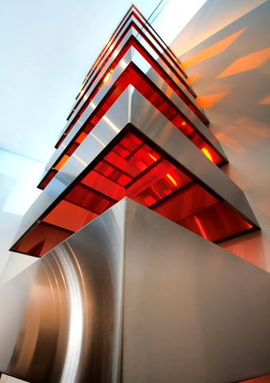
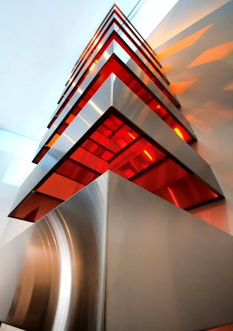

DONALD JUDD
Escultor estadounidense. Su trayectoria artística pasó de una primera etapa como pintor abstracto de composiciones geométricas bastante austeras a una segunda etapa como crítico de arte (durante los años cincuenta) y a una tercera como escultor, desde comienzos de la década de 1960.
Este último período es el que lo convirtió en una figura de proyección universal y en uno de los principales representantes y teóricos del minimalismo. El arte minimal se consolidó en Estados Unidos a partir de 1965 siguiendo un proceso reduccionista que llevaría la pintura, pero sobre todo la escultura, hacia sus estructuras más simples y esenciales. El término fue aplicado por primera vez por Richard Wollheim en un artículo de la revista Arts Magazine en el que, citando obras de Duchamp, Reinhardt y algunos artistas pop, defendía la intervención mínima de los autores. Se debe sin embargo a Ad Reinhardt el famoso "menos es más", que se convirtió en una de las consignas fundamentales del movimiento.
Donald Judd utilizó la madera en sus primeras realizaciones, pero pronto incorporó el plexiglás y el acero inoxidable, su material más característico. Con ellos creó obras basadas en yuxtaposiciones y superposiciones mediante las que intentó expresar relaciones afines a las progresiones matemáticas. Todas sus creaciones son obras frías, carentes de cualquier intención decorativa o implicación emocional, en las que a menudo utiliza el color para de esta manera acentuar la estructura de las piezas.
La repetición, la despersonalización y la depuración, tres de los conceptos básicos del arte minimal, alcanzan en obras como la serie Stacks una de sus más evidentes plasmaciones. Judd se sirve de módulos geométricos elementales y neutros, desprovistos de cualquier valor significativo, simbólico o expresivo, que se presentan alineados en intervalos regulares. El resultado es una obra de arte reducida a su mínima expresión, deliberadamente fría (a lo que sin duda contribuye también el uso de materiales de fabricación industrial), que puede ser vista como una reacción contra la exacerbación subjetiva de artistas contemporáneos como Jackson Pollock.
La mayor parte del arte es frágil y algunas deberían colocarse y no volver a moverse nunca más.


 
